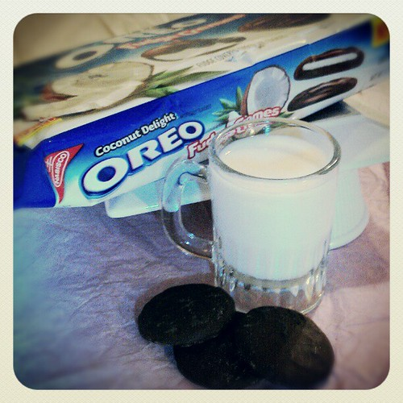
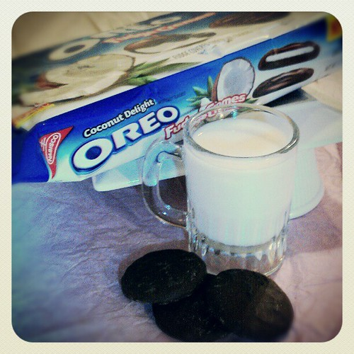

Step 1
Main ingredients
- Four Oreos
- One third cup of Milk
- Quarter teaspoon Baking Powder

Oreo and Milk Javcon117.
Step 2
Instructions
- Mix oreos into cup/bowl
- Add one third cup of Milk
- Add quarter teaspoon Baking Powder

Oreo and Milk Javcon117.